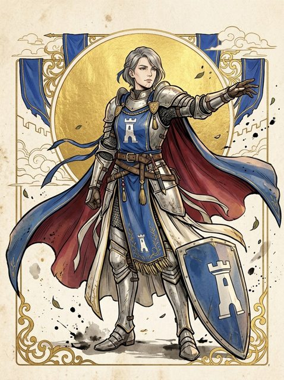
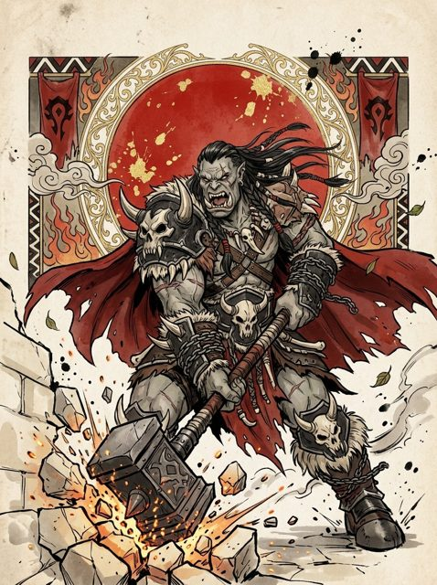
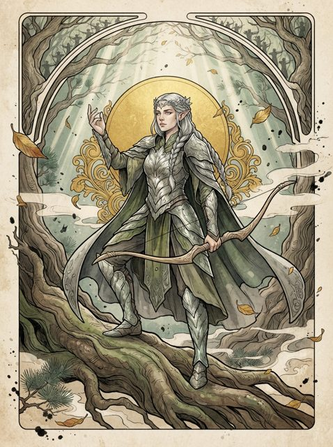
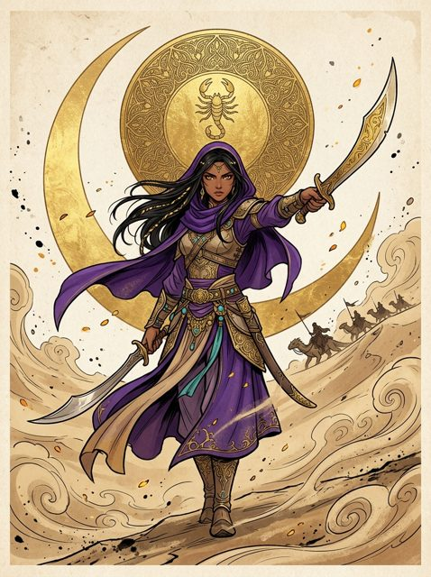
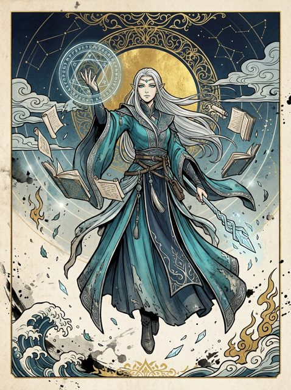
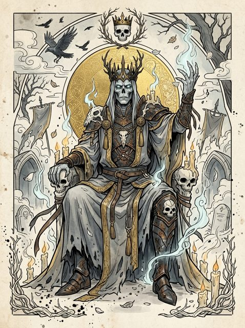

Jogo de cartas tático de fantasia. Seis facções, um tabuleiro 3×3 por jogador, campanha com história e partidas online com os amigos.
Baixar o jogo Grátis · Windows e Linux (Steam Deck)Cada facção tem o seu jeito de lutar. Monte o deck, posicione as tropas e abra uma Brecha até o Líder inimigo.

Guarda de ElmarMuralha e formação
Horda de GorthakForça bruta e empurrões
Vigília de SylvarenArqueiros e puxões
Clã de VashkarVelocidade e emboscadas
Círculo de IthrennMagia e controle
Legião de NekharMortos que voltamO jeito recomendado é o atualizador: um programa pequeno que baixa o jogo, mantém sempre atualizado (só baixa o que mudou) e abre o jogo.
chmod +x FallOfTheSuns-linux e depois ./FallOfTheSuns-linux.Carregando...